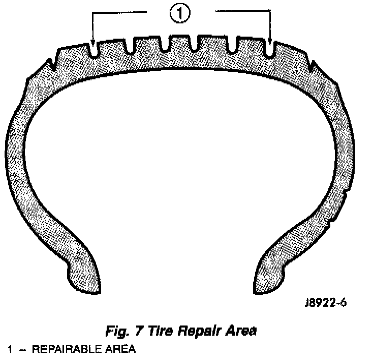

Repairing Leaks
Fig. 7:

For proper repairing, a radial tire must be removed from the wheel. Repairs should only be made if the defect, or puncture, is in the tread area. The tire should be replaced if the puncture is located in the sidewall.
Deflate tire completely before dismounting tire from the wheel. Use lubrication such as a mild soap solution when dismounting or mounting tire. Use tools free of burrs or sharp edges which could damage the tire or wheel rim.
Before mounting tire on wheel, make sure all rust is removed from the rim bead and repaint if necessary.
Install wheel on vehicle, and tighten to proper torque specification.